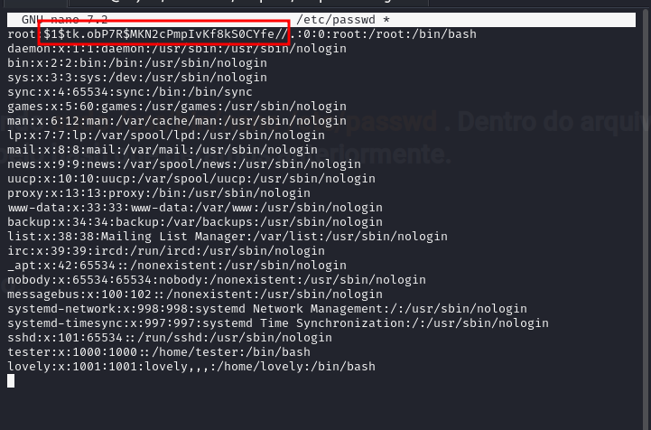

maq.consolelog
MÁQUINA CONSOLELOG
Para utilizar esta máquina devemos primeiro baixar os arquivos e assim implantá-la com Docker.
Baixamos o arquivo da página https://dockerlabs.es/
Para implantar o laboratório executamos da seguinte forma, para que também possamos ver que ele nos diz a direção que teremos, bem como o que fazer quando terminarmos.
COLETA DE INFORMAÇÕES
nmap 172.17.0.2 -A -sS -sV -sC --open -p- -T5 -n -Pn
Observamos que a porta 80 está usando o protocolo HTTP com o serviço Apache versão 2.4.61.
A porta 3000 também opera sob o protocolo HTTP e executa um serviço Node.js com Express.
Por outro lado, a porta 5000 está configurada para o protocolo SSH.
Em primeiro lugar, vamos nos concentrar na porta 80. Ao acessar esta porta a partir de um navegador, veremos o seguinte:
Na página, vemos um título que diz “Bem-vindo ao meu site” e um botão que diz “Botão em fase beta”.
Ao clicar neste botão e verificar o console do navegador, encontramos a seguinte mensagem: ***Para opçãoVemos um título que diz "Bem-vindo ao meu site" e um botão que diz "Botão em fase beta"...
Se clicarmos nesse botão e vermos o console do navegador, veremos uma mensagem que diz Para opções de depuração, o token /recurso/ é tokentraviesito , se aplicarmos o Fuzzing à web encontraremos algumas rotas interessantes como estas.es depuração, o token de /recurso/ é tokentraviesito***.
Se aplicarmos técnicas de Fuzzing no site, descobriremos alguns caminhos interessantes, como os seguintes:
Se entrarmos nesta rota veremos o seguinte:
Acessando o arquivo server.js, podemos ver o codigo fonte do referido arquivo.
outra maneira de ver a senha atraves do terminal é com comando:
curl -X POST http://172.17.0.2:3000/recurso/ -H "Content-Type: application/json" -d '{"token":"tokentraviesito"}'
O arquivo que estamos vendo em resumo é um servidor montado com Express e possui um endpoint definido que permite requisições utilizando o método POST para uma rota chamada /recurso/e basicamente se enviarmos um campo chamado na body requisição tokene colocarmos o valor do tokentraviesito servidor iremos responder com uma mensagem que diz lapassworddebackupmaschingonadetodas... Notamos que existe uma variável chamada porta, que está configurada com o valor 3000, indicando a porta na qual o servidor está escutando. É por isso que a porta 3000 apareceu aberta durante a nossa varredura.
Agora podemos enviar uma requisição POST com o tokencampo y no valor send tokentraviesitopara receber a mensagem, mas como já estamos vendo diretamente o que o servidor irá nos responder, não vejo necessidade de segui-lo... Apenas copie a resposta que é lapassworddebackupmaschingonadetodas, lembre-se que a porta 5000 roda SSH, agora podemos tentar fazer ataques de força bruta com Hydra usando a referida senha possível e uma lista de possíveis usuários para ver se conseguimos obter acesso...
E vemos que conseguimos encontrar credenciais válidas.

explicação do comando hydra
Escalação de privilégios
Ao executar o comando sudo -l, vemos que podemos executar o binário /usr/bin/nano como qualquer usuário sem precisar fornecer uma senha.
EXEMPLO 1 PARA SER ROOT: openssl passwd
Iremos gerar um hash usando openssl passwd a senha de nossa escolha; neste caso, usarei a senha Deus.
Assim que o hash for gerado, iremos copilo para uso posterior.
A seguir, abriremos o arquivo /etc/passwd usando o comando sudo /usr/bin/nano /etc/passwd . Dentro do arquivo, substituiremos o caractere x na entrada correspondente pelo hash que geramos anteriormente.
O arquivo /etc/passwd deve ficar assim após a substituição.
Em seguida, salvamos as alterações e saímos do editor.

Agora só precisamos executar o comando su root e digitar a senha que usamos para gerar o hash, no meu caso pwned. Isso nos permitirá nos tornar o usuário root.
somos root
*************************************************************************************************************************
EXEMPLO 2

somos root
bobmarley